在本章中，我们将了解使用AWS部署TensorFlow的架构，并且我们将使用预先存在的包和无服务器框架在AWS Lambda上部署TensorFlow。我们还将研究在AWS Lambda上部署各种Python框架的各种常见问题，然后讨论这些问题的所有解决方案。
我们将讨论以下主题:
在本节中，我们将了解使用AWS Lambda部署TensorFlow的架构。部署的一个关键问题是关于在哪里保存将在AWS Lambda中使用的重新训练的模型。
有以下三种可能的选择:
这个选项意味着模型在部署包中。代码将从本地文件系统导入它。这种选择有其利弊。
该模型在部署包中的优势如下:
部署包中模型的缺点如下:
这个选项意味着我们必须将模型保存在S3桶中，并在AWS Lambda执行期间卸载它。就封装尺寸而言，此选项非常有限。
该模型在S3铲斗上的优势如下:
S3铲斗模型的缺点如下:
该选项主要用于希望限制使用AWS服务、内存或与AWS之外的服务集成的情况。AWS Lambda在部署期间从HTTP或FTP服务器下载模型。
该模型在HTTP/FTP服务器上的优势如下:
该模型在HTTP/FTP服务器上的缺点如下:
在本节中，我们将了解AWS Lambda主限制，也称为包的大小。Lambda部署包的当前限制是50 MB。它应该包括库和代码。我们需要安装两个主要的库:
这些库用于矩阵计算。正如你可能知道的，库本身是相当大的，它们不能在AWS Lambda上工作。正如您在前面关于部署的部分中已经看到的，当我们通过S3部署它们时，我们没有这个限制，并且我们对解压缩后的包只有250 MB的限制。在这种情况下，为了让它工作，我们需要减小封装的大小。
有多种方法可以减小封装尺寸。以下是这些问题的解决方案:
现在，在下面的代码中，有一部分查找并压缩所有共享库。然后，我们找到并删除所有的.pyc文件。
以下屏幕截图显示了上述解释的命令:
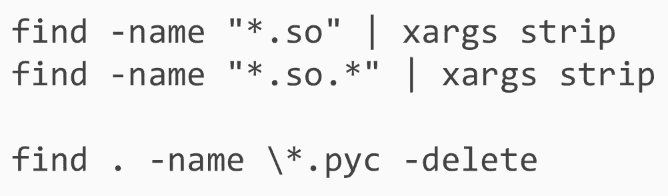
接下来，我们需要删除执行过程中不会用到的库，比如.pip和wheel。最后，我们还可以从TensorFlow库中删除一些文件夹。
以下屏幕截图显示了上述解释的不同命令:
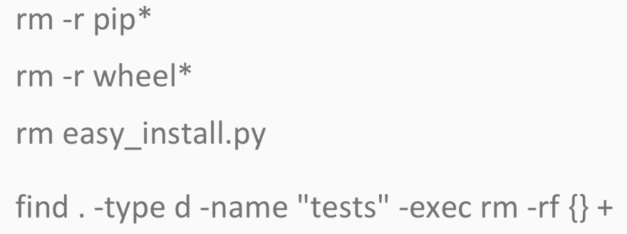
为AWS Lambda准备一个包的整个过程可以通过Docker来完成。对于我们将要创建的项目，您不需要使用它，但是最好记住如何准备这种包。
要安装Docker，您只需在注释行中运行三条注释:
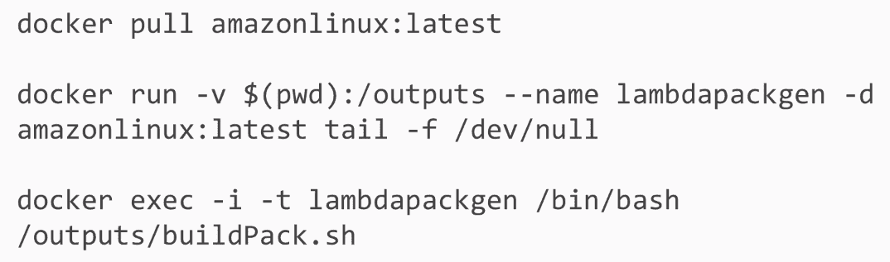
在本节中，我们将学习使用预先存在的包在AWS Lambda上部署TensorFlow。在项目文件中，我们有模型文件，也称为模型本身，以及使我们能够通过标签转换模型响应的文件。在Inception文件夹和Lambda包中，也就是在lambdapack文件夹中的代码和库。
要运行代码，我们需要执行以下操作:
现在，我们将使用AWS控制台创建S3桶，并在那里上传文件。我们将打开代码并添加我们刚刚创建的bucket。然后，我们来打包上传添加AWS Lambda。
我们必须遵循给定的步骤:
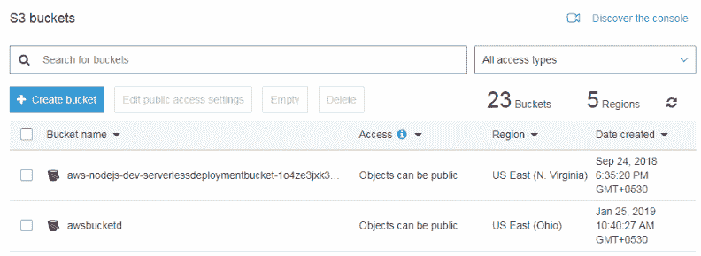
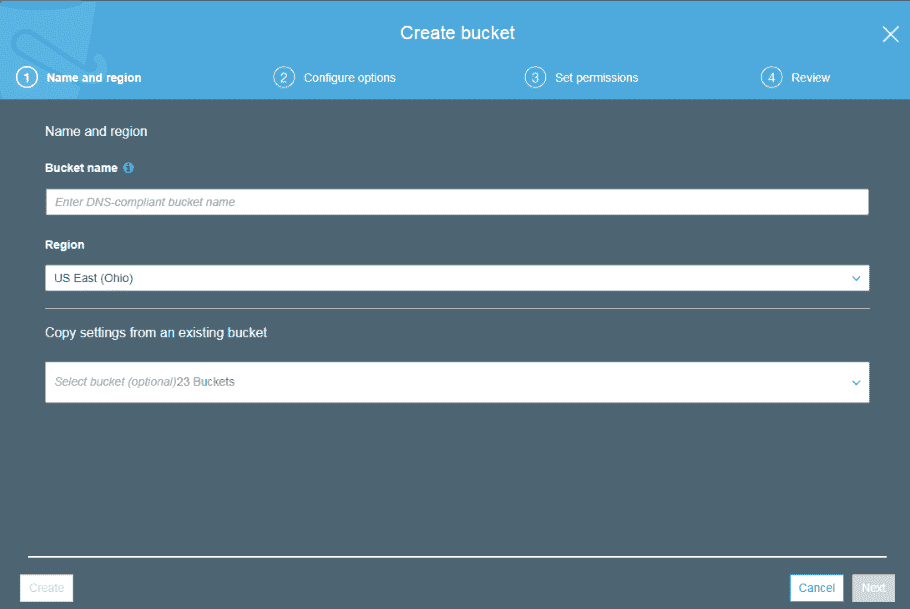
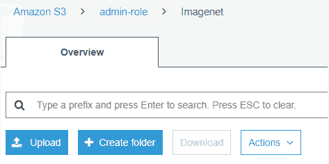
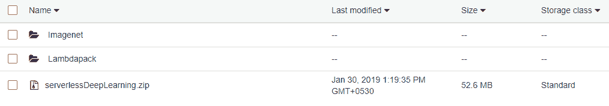
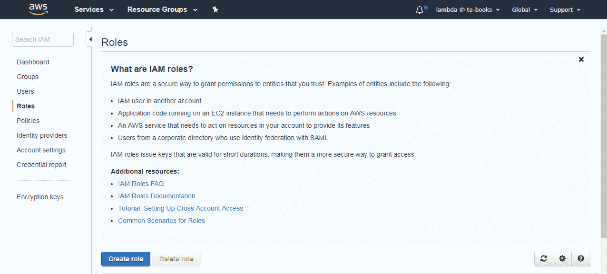
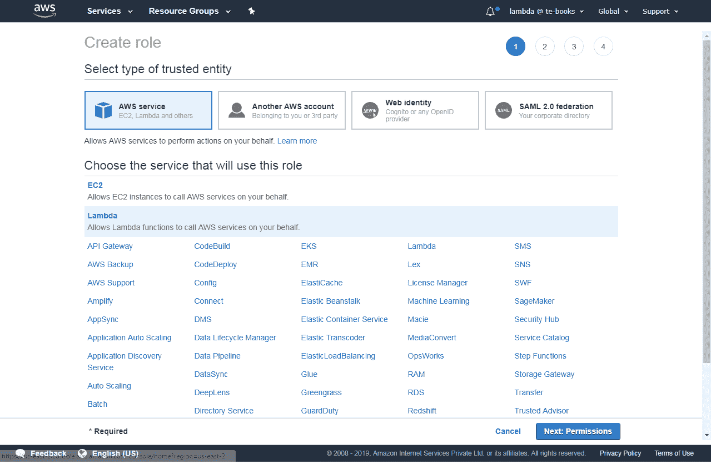
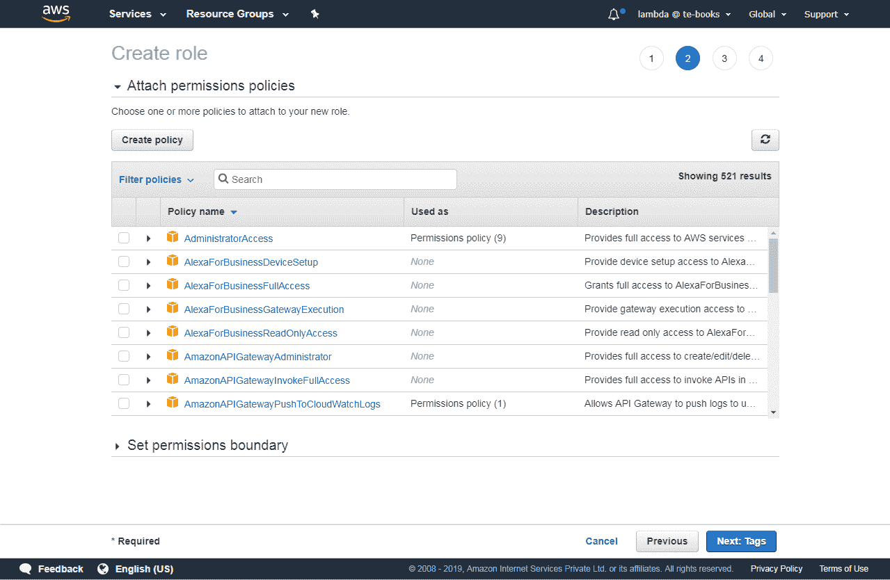
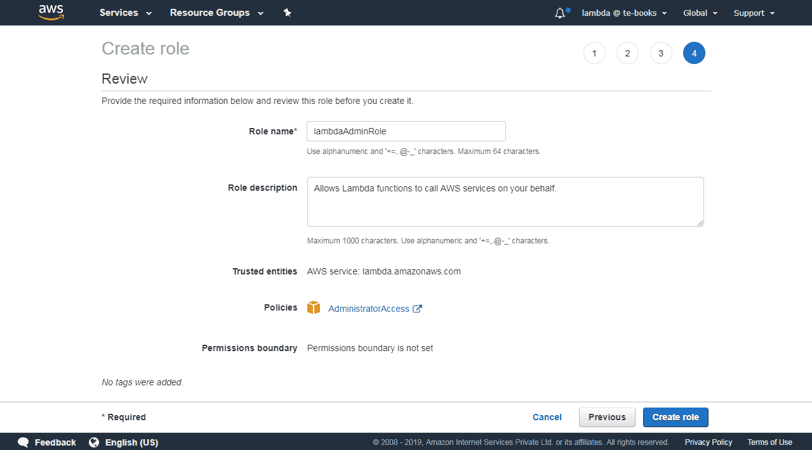
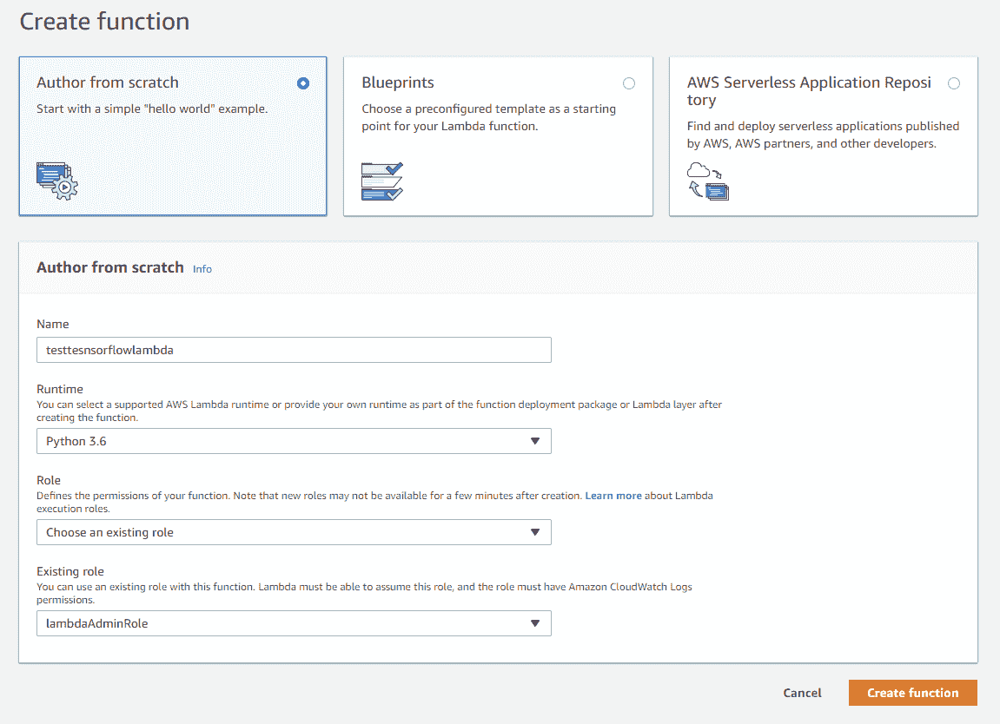
10.创建函数后，我们需要将处理程序改为index.handler:
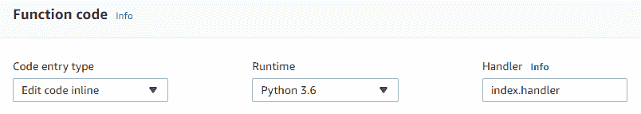
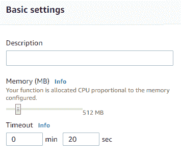
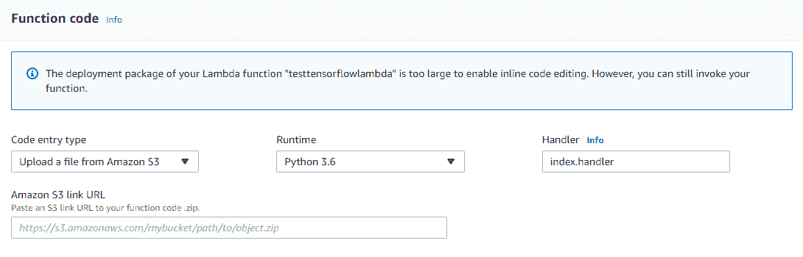
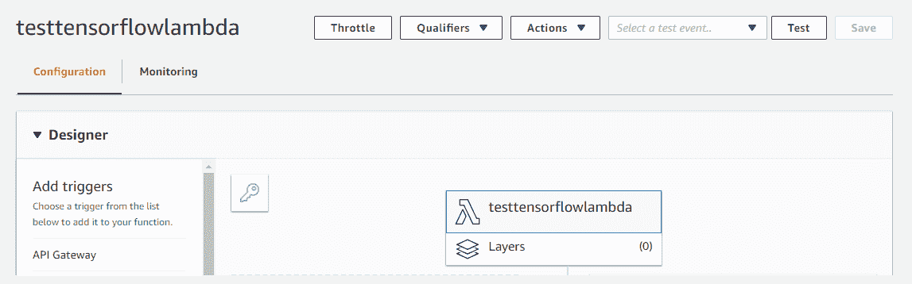
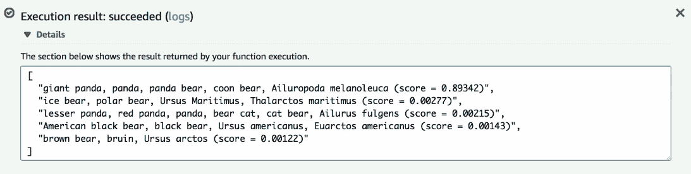
首先，我们将查看项目文件。我们在Inception文件夹中有模型文件，在Lambdapack文件夹中有带有Serverless.yml的Lambda代码，配置文件。
部署流程将与上一节相同。一个主要的区别是，我们将通过无服务器CML文件提供对bucket的访问，而不是提供AWS Lambda管理角色。我们唯一需要添加的是bucketname，并运行access的属性，如下所示:
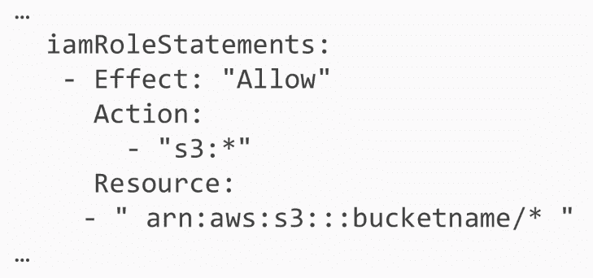
我们将需要创建一个S3桶，上传文件，然后部署AWS Lambda。我们将创建一个S3桶，并从命令行上传文件:aws s3 sync.s3://<bucket>/。
我们首先需要创建一个bucket，然后将模型文件上传到bucket，运行serverless，并启动AWS Lambda。
让我们看看可用的文件。我们将查看如图所示的index.py文件:
import boto3
import numpy as np
import tensorflow as tf
import os.path
import re
from urllib.request import urlretrieve
import json
SESSION = None
strBucket = 'serverlessdeeplearning'
def handler(event, context):
global strBucket
if not os.path.exists('/tmp/imagenet/'):
os.makedirs('/tmp/imagenet/')
strFile = '/tmp/imagenet/inputimage.jpg'
主要的区别是我们在handler函数中运行代码，我们需要从S3桶中下载模型文件和图像文件:
if not os.path.exists('/tmp/imagenet/'):
os.makedirs('/tmp/imagenet/')
strFile = '/tmp/imagenet/inputimage.jpg'
downloadFromS3(strBucket,'imagenet/inputimage.jpg',strFile)
global SESSION
if SESSION is None:
downloadFromS3(strBucket,'imagenet/imagenet_2012_challenge_label_map_proto.pbtxt','/tmp/imagenet/imagenet_2012_challenge_label_map_proto.pbtxt')
downloadFromS3(strBucket,'imagenet/imagenet_synset_to_human_label_map.txt','/tmp/imagenet/imagenet_synset_to_human_label_map.txt')
image = os.path.join('/tmp/imagenet/', 'inputimage.jpg')
strResult = run_inference_on_image(image)
return strResult
def run_inference_on_image(image):
另外，我们可以利用AWS Lambda的一个优点。我们可以将模型文件保存为全局变量。基本上，我们可以将会话定义为一个全局变量。有了这些，如果我们在前一个Lambda执行之后立即启动Lambda，所有的模型文件都将在RAM内存中:
global SESSION
if SESSION is None:
downloadFromS3(strBucket,'imagenet/imagenet_2012_challenge_label_map_proto.pbtxt','/tmp/imagenet/imagenet_2012_challenge_label_map_proto.pbtxt')
downloadFromS3(strBucket,'imagenet/imagenet_synset_to_human_label_map.txt','/tmp/imagenet/imagenet_synset_to_human_label_map.txt')
image = os.path.join('/tmp/imagenet/', 'inputimage.jpg')
strResult = run_inference_on_image(image)
return strResult
def run_inference_on_image(image):
image_data = tf.gfile.FastGFile(image, 'rb').read()
global SESSION
if SESSION is None:
SESSION = tf.InteractiveSession()
create_graph()
在Serverless.yml文件中，我们需要定义对S3桶的访问，因为我们将在那里保存我们的模型。除此之外，它将与前面提到的用于其他Lambdas的无服务器CML文件完全一样:
service: deeplearninglambda
frameworkVersion: ">=1.2.0 <2.0.0"
provider:
name: aws
region: us-east-1
runtime: python3.6
memorySize: 1536
timeout: 60
iamRoleStatements:
- Effect: "Allow"
Action:
- "s3:ListBucket"
Resource:
- arn:aws:s3:::serverlessdeeplearning
- Effect: "Allow"
Action:
- "s3:GetObject"
Resource:
- arn:aws:s3:::serverlessdeeplearning/*
functions:
main:
handler: index.handler
此外，我们需要inputimage.jpg的图像用于初始模型。
让我们来看看需要上传到S3木桶的文件:
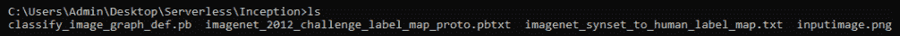
有两个非常方便的命令:一个允许我们创建一个桶，另一个允许我们轻松地将文件上传到桶中:
因为我们在这个存储桶中已经有了模型文件，所以现在没有必要保存它，但是您可以使用这个命令上传到您的存储桶。接下来，我们可以使用我们的函数返回到该文件夹并运行serverless deploy命令。
现在，我们将使用以下命令调用该函数:
serverless invoke --function main
如你所见，它成功地识别了图像。此外，如果我们在此之后再次调用该函数，它将运行得更快:
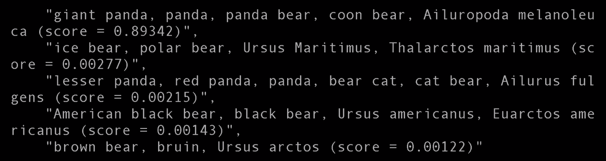
在本章中，我们学习了使用AWS Lambda部署TensorFlow的体系结构，其中涵盖了使用AWS Lambda部署TensorFlow的可能选项及其优缺点。我们还讨论了在AWS Lambda中部署Python框架的一般问题及其解决方案。最后，我们使用预先存在的包和无服务器框架在AWS Lambda上部署TensorFlow。
在下一章，我们将使用AWS Lambda创建深度学习API。